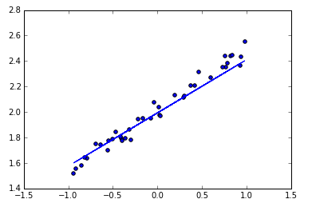
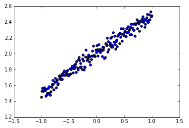

Regressor 回归
作者: Alice 编辑: 莫烦 2016-10-29
学习资料:
神经网络可以用来模拟回归问题 (regression)，例如给下面一组数据，用一条线来对数据进行拟合，并可以预测新输入 x 的输出值。

导入模块并创建数据
models.Sequential，用来一层一层一层的去建立神经层；
layers.Dense 意思是这个神经层是全连接层。
import numpy as np
np.random.seed(1337) # for reproducibility
from keras.models import Sequential
from keras.layers import Dense
import matplotlib.pyplot as plt # 可视化模块
# create some data
X = np.linspace(-1, 1, 200)
np.random.shuffle(X) # randomize the data
Y = 0.5 * X + 2 + np.random.normal(0, 0.05, (200, ))
# plot data
plt.scatter(X, Y)
plt.show()
X_train, Y_train = X[:160], Y[:160] # train 前 160 data points
X_test, Y_test = X[160:], Y[160:] # test 后 40 data points

建立模型
然后用 Sequential 建立 model，
再用 model.add 添加神经层，添加的是 Dense 全连接神经层。
参数有两个，一个是输入数据和输出数据的维度，本代码的例子中 x 和 y 是一维的。
如果需要添加下一个神经层的时候，不用再定义输入的纬度，因为它默认就把前一层的输出作为当前层的输入。在这个例子里，只需要一层就够了。
model = Sequential()
model.add(Dense(output_dim=1, input_dim=1))
激活模型
接下来要激活神经网络，上一步只是定义模型。
参数中，误差函数用的是 mse 均方误差；优化器用的是 sgd 随机梯度下降法。
# choose loss function and optimizing method
model.compile(loss='mse', optimizer='sgd')
以上三行就构建好了一个神经网络，它比 Tensorflow 要少了很多代码，很简单。
训练模型
训练的时候用 model.train_on_batch 一批一批的训练 X_train, Y_train。默认的返回值是 cost，每100步输出一下结果。
# training
print('Training -----------')
for step in range(301):
cost = model.train_on_batch(X_train, Y_train)
if step % 100 == 0:
print('train cost: ', cost)
"""
Training -----------
train cost: 4.111329555511475
train cost: 0.08777070790529251
train cost: 0.007415373809635639
train cost: 0.003544030711054802
"""
检验模型
用到的函数是 model.evaluate，输入测试集的x和y， 输出 cost，weights 和 biases。其中 weights 和 biases 是取在模型的第一层 model.layers[0] 学习到的参数。从学习到的结果你可以看到, weights 比较接近0.5，bias 接近 2。
# test
print('\nTesting ------------')
cost = model.evaluate(X_test, Y_test, batch_size=40)
print('test cost:', cost)
W, b = model.layers[0].get_weights()
print('Weights=', W, '\nbiases=', b)
"""
Testing ------------
40/40 [==============================] - 0s
test cost: 0.004269329831
Weights= [[ 0.54246825]]
biases= [ 2.00056005]
"""
可视化结果
最后可以画出预测结果，与测试集的值进行对比。
# plotting the prediction
Y_pred = model.predict(X_test)
plt.scatter(X_test, Y_test)
plt.plot(X_test, Y_pred)
plt.show()
如果你觉得这篇文章或视频对你的学习很有帮助, 请你也分享它, 让它能再次帮助到更多的需要学习的人. 莫烦没有正式的经济来源, 如果你也想支持 莫烦Python 并看到更好的教学内容, 赞助他一点点, 作为鼓励他继续开源的动力.